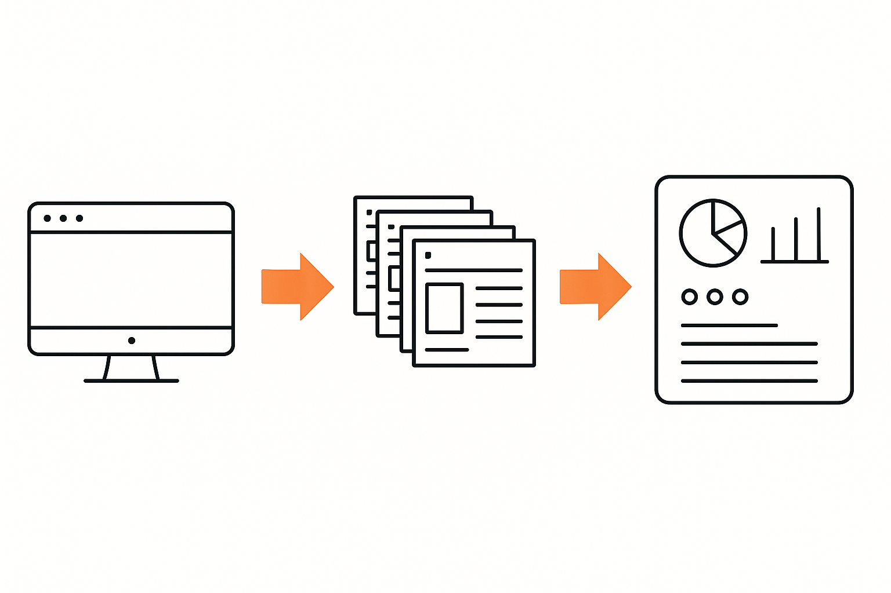

class: center, middle # Using AI Tools and Python to Automate Tasks _A two-day, beginner-friendly journey to streamline workflows, boost productivity, and integrate AI into everyday tasks._ --- # Goals 1. **Understand the basics of Python scripting without prior programming experience** -- 2. **Explore ways to leverage LLMs in combination with Python** -- 3. **Learn how to automate tasks such as file organization and data entry** -- 4. **Use Python scripts to integrate with external LLM APIs** --- class: center, middle <h1> <span style="background-color: orange"> Survey Question: Do you have a subscription for ChatGPT/Claude/Gemini? </span> </h1> --- class: center, middle # Programming? --- class: center, middle # Making Machines Do What You Want 🤖 --- # Example: Instructing a Robot -- - The Task: **"Move forward, pick up the box, turn right, place the box"** -- - The Code: ```python def deliver_package(): robot.move_forward(steps=10) robot.pick_up("box") robot.turn_right(90) robot.place_item("box") robot.say("Package delivered!") ``` -- <div style="display: flex; align-items: center; margin-top: 28px;"> <div style="flex: 1; text-align: center;"> <div style="font-size: 150px;">🤖</div> <p style="font-size: 0.9em;">The robot follows your instructions exactly!</p> </div> </div> --- # It's Like Writing Recipes <div style="display: flex; align-items: center;"> <div style="flex: 1;"> <img src="../notebooks/assets/2025-02-01-17-23-04.png" width="45%"> </div> <div style="flex: 1;"> <pre><code class="python" style="font-size: 0.8em;"># Pancake Making Algorithm def make_pancake(): # Step 1: Prepare batter base batter = mix_flour_and_milk() # Step 2: Complete the batter batter = add_egg_and_stir(batter) # Step 3: Prepare cooking surface pan = heat_pan_on_stove() # Step 4: Start cooking pour_batter_in_pan(pan, batter) # Step 5: Wait for indicator wait_for_bubbles() # Step 6: Turn the pancake flip_pancake() # Step 7: Finish cooking cook_other_side() return pancake </code></pre> </div> </div> --- class: center, middle # Why Learn to Automate? --- class: center, middle # Automate Repetitive Tasks  --- class: center, middle # Increase Productivity <img src="../notebooks/assets/2025-11-19-10-26-42.png" width="60%"> --- class: center, middle # Replacing Subscriptions (saving $) <img src="../notebooks/assets/2025-11-19-10-32-14.png" width="60%"> --- class: center, middle # Analyse Massive Amounts of Data <img src="../notebooks/assets/2025-11-19-10-32-52.png" width="80%"> --- class: center, middle # The Real Reason.... --- class: center, middle # Writing code = the most general skill you can have! *It is a superpower! :)* --- class: center, middle # Important Clarification ## Learning to automate ≠ Everyone should be a developer --- # Automation is for Everyone -- - Automation skills are for **everyone** -- - Professional software engineering is a **specialized career** -- - You can be productive with code **without becoming a full-time developer** -- - It's about writing **scripts** not fancy software -- - Script = **simple program** that automates a task -- - Professional software = **complex program engineered** to be used by many people --- class: center, middle # Scripting ≠ 'Software Engineering' --- class: center, middle # Scripting <img src="../notebooks/assets/2025-11-19-11-02-07.png" width="100%"> --- class: center, middle # Software Engineering <img src="../notebooks/assets/2025-11-19-11-01-35.png" width="100%"> --- # Scripting - Writing code to full fill a set of pre-defined steps that accomplish a task -- - Quick, targeted, and task-oriented -- - You don't think that much about it -- - Typically used for automations, data manipulation, or utility tasks --- class: center, middle # Real Automation Examples (that I use!) --- class: center, middle # Bulk YouTube Upload Automation <img src="../notebooks/assets/2025-11-19-11-26-31.png" width="60%"> ??? - Problem: Upload 50 videos with custom metadata (titles, descriptions...) - Solution: Script that reads metadata from a spreadsheet and automates the upload process - Saved: 10+ hours of repetitive clicking --- class: center, middle # Notes Processor ??? - Problem: Convert scattered meeting notes into organized summaries with action items - Solution: Script that parses notes, extracts key points, and generates formatted reports - Benefit: Consistent documentation without manual reformatting --- class: center, middle # Your automation doesn't need to be perfect—it just needs to solve YOUR problem! --- class: center, middle <div style="display: flex; align-items: center; justify-content: center;"> <h1 style="margin-right: 20px;">Why Python?</h1> <img src="../notebooks/assets/python-logo.svg" width="100px"> </div> --- <div style="display: flex; align-items: left; "> <h1 style="margin-right: 20px;">What is Python?</h1> <img src="../notebooks/assets/python-logo.svg" width="100px"> </div> **Python** is a high-level, general-purpose programming language designed for readability and simplicity. -- Created by Guido van Rossum in 1991, Python emphasizes code that reads like English. -- <div style="display: flex; align-items: center; margin-top: 20px;"> <div style="flex: 1;"> <h3>English:</h3> <p style="font-size: 1.1em;">"For each item in my shopping list, print the item"</p> </div> <div style="flex: 1;"> <h3>Python:</h3> <pre><code class="python" style="font-size: 1.0em;">for item in shopping_list: print(item)</code></pre> </div> </div> -- **See how similar they are? That's Python's superpower!** --- <div style="display: flex; align-items: left; "> <h1 style="margin-right: 20px;">Python is Easy and Everywhere</h1> <img src="../notebooks/assets/python-logo.svg" width="100px"> </div> <div style="text-align: center;"> <img src="../notebooks/assets/2025-02-01-16-12-52.png" width="70%" style="border-radius: 30px;"> </div> --- <div style="display: flex; align-items: left; "> <h1 style="margin-right: 20px;">Python is Easy and Everywhere</h1> <img src="../notebooks/assets/python-logo.svg" width="100px"> </div> - **General Purpose**: Can be used for web development, data science, automation, AI, and more -- - **Most Popular**: #1 language among developers worldwide (TIOBE Index, Stack Overflow) -- - **Powers Modern Technology**: - 🤖 AI & Machine Learning (TensorFlow, PyTorch) - 🚗 Self-driving cars (Tesla, Waymo) - 👁️ Computer vision & image recognition - 🌐 Web applications (Instagram, Spotify, Netflix) - 🔬 Scientific computing & research -- - **Beginner-Friendly**: Reads like English, minimal syntax complexity --- # Scripting with Python -- - Much faster learning curve - *if it works don't change it* -- - Immediate practical benefits - *makes your life better* -- - Ideal for nondevelopers who just want to get things done -- - **It's about learning to solve YOUR specific problems** -- - Scripts should be **tailored to your unique needs**, not one-size-fits-all solutions --- class: center, middle # _The Ostrich Approach to Learning Python_ <div style="text-align: center;"> <img src="../notebooks/assets/2025-01-31-16-24-34.png" width="30%"> </div> --- class: center, middle <div style="text-align: center;"> <img src="../notebooks/assets/2025-01-31-16-20-25.png" width="100%"> </div> --- class: center, middle # It's about Learning What We Need for Our Tasks! -- *And purposefuly ignoring that which does not seem to have any effect on its success.* --- class: center, middle # The Busy Person Guide to Python Basics --- # Python Things We Will Learn - **Basic Syntax**: Indentation, variable assignments, printing -- - **Common Data Types**: Strings, integers, floats, booleans -- - **Control Structures**: `if` statements, loops (`for`, `while`) -- - **Useful Libraries**: `os` for file operations, `csv` for handling CSVs, `requests` for making web requests -- - That is a lot! How can we manage? -- - Use AI conversationally! Asking questions and clarifying what you don't know! --- # The "Just Ask AI" Naive Approach -- <div style="display: flex; justify-content: center; align-items: center; margin-top: 150px;"> <img src="../notebooks/assets/2025-02-01-16-37-14.png" width="100%"> </div> --- # The "Just Ask AI" Naive Approach <div style="display: flex; justify-content: center; align-items: center; margin-top: 120px;margin-left: 50px;"> <img src="../notebooks/assets/2025-02-01-16-47-17.png" width="125%"> </div> --- class: center, middle <h1> <span style="background-color: lightgreen;"> Demo - Setting Up Your Environment </span> </h1> (Installing Python, uv, Editor, Jupyter Notebook, AI chatbot) <div style="display: flex; justify-content: center; align-items: center; margin-top: 20px;"> <img src="../notebooks/assets/qr-code-repo.png" width="200px"> </div> --- # Data Types, Operations, Variables - Writing code is about writing text that changes or manipulates data in some way -- - <div style="display: flex; align-items: center;"> <div> For that we need? ..... (drumbroll)</div> <div><img src="../notebooks/assets/2025-01-31-16-30-04.png" width="100px" style="margin-left: 10px;"></div> </div> - **Data!** Specifically a way to describe it, reference it, talk about it etc... -- - In Python data can be of different **types** (like numbers, text, image etc...) -- - The things we can do to it are called **operations** (like 5+5) -- - To organize things, we use **variables** to define what each thing is --- # Data Types, Operations, Variables - Example - Here is a piece of code that defines a variable of some type and performs a simple operation on the data stored in the variable ```python # This is data of type string! name = "Lucas" # This is data of type integer! actual_age = 33 # This is data of type integer! mental_age = 12 # our operation average_age_between_actual_and_mental = (actual_age + mental_age) / 2 # special function that displays what goes inside of it print(average_age_between_actual_and_mental) # this would be a float! # Output: 22.5 ``` --- class: center, middle <h1> <span style="background-color: lightgreen"> Data Types; Operations; Variables - Demo </span> </h1> --- # Data Types, Operations, Variables - **Core Data Types**: -- - **int**: whole nubmers like 1, 2, 3 ... -- - **float**: decimal numbers like 1.1, 1.0, etc... -- - **string**: text like `'Hello'` -- - **bool**: logical booleans like True or False -- - **Operations**: -- - **Arithmetic** `(`+`, `-`, `*`, `/`, `**`, `//`, `%`)` -- - **String concatenation** (`'Lucas' + ' is' + ' wonderful' = 'Lucas is wonderful'`) -- - **Logical operations** (`and`, `or`, `not`) -- - **Comparison operations** (`>`, `<`, `>=`, `<=`, `==`, `!=`) --- - **Variables**: Storing data for reuse, assigning and reassigning values: ```python a = 10 b = 20 print(a + b) # Output: 30 ``` --- class: center, middle <h1> <span style="background-color: lightgreen"> Demo: Functions, Lists & Loops </span> </h1> --- # Functions -- - Functions are a way to group code that performs a specific task -- - Functions can take parameters and return values -- - For example, a function that calculates the total cost of an item including tax -- - We could do this by simply writing a script: -- ```python # Arithmetic operation: multiplication of parameters tax = price * tax_rate # Arithmetic operation: addition of variables total = price + tax ``` - But what if I want to re-use this code for different prices and tax rates? --- # Functions - Here is what it would look like if we define a function to do this: ```python def calculate_total(price, tax_rate): tax = price * tax_rate total = price + tax return total ``` -- - Now we can re-use the function for different prices and tax rates: ```python shirt_price = 10 shirt_tax_rate = 0.05 pants_price = 20 pants_tax_rate = 0.1 print(calculate_total(shirt_price, shirt_tax_rate)) # Output: 10.5 print(calculate_total(pants_price, pants_tax_rate)) # Output: 22.0 ``` --- # Functions - **Why Functions?**: Reuse code and break tasks into smaller chunks -- - **Defining a Function**: `def function_name(parameters):` -- - **Return Values**: Make your functions flexible and reusable -- - **Best Practices**: Keep them short, descriptive, and single-purpose --- # Lists & Loops - **Lists**: Python’s go-to data structure for ordered collections -- ```python # Define a list of tasks tasks = ["Buy groceries", "Finish project", "Call the bank"] ``` - **Access Elements**: Indexing and slicing -- ```python print(tasks[0]) # Output: Buy groceries print(tasks[1]) # Output: Finish project ``` -- - **Slice**: Get a range of elements -- ```python print(tasks[0:2]) # Output: ['Buy groceries', 'Finish project'] ``` --- # Lists & Loops - **Loops**: `for` loops to iterate over items -- ```python tasks = ["Buy groceries", "Finish project", "Call the bank"] for task in tasks: print(task) ``` -- - **Processing List Elements**: With `for` loops we can perform the same operation on each element of the list -- ```python # Below we use an imaginary function that asks a robot to do a task for task in tasks: ask_robot_to_do(task) ``` -- **Common Uses**: Batch renaming files in a directory, processing data from tables, etc... --- class: center, middle <h1> <span style="background-color: lightgreen"> Demo - Dictionaries, Tabular Data, Conditionals </span> </h1> --- # Dictionaries & Tabular Data - **Dictionaries**: Key-value pairs for storing related data -- ```python # Dictionary of product prices prices = { "apple": 0.50, "banana": 0.75, "orange": 0.60 } ``` -- - **Accessing Values**: Use keys to lookup values quickly -- ```python print(prices["apple"]) # Output: 0.50 print(prices["banana"]) # Output: 0.75 ``` -- - **Common Uses**: Storing configurations, mapping relationships, caching data --- # Comparators & Conditionals - **Boolean Comparisons**: `==`, `!=`, `>`, `<`, `>=`, `<=` -- ```python # Example of a boolean comparison a = 10 b = 20 print(a == b) # Output: False print(a != b) # Output: True print(a > b) # Output: False print(a < b) # Output: True print(a >= b) # Output: False print(a <= b) # Output: True ``` -- - **Logical Operators**: `and`, `or`, `not` -- ```python # Example of a logical operator print(True and False) # Output: False print(True or False) # Output: True print(not True) # Output: False ``` --- # Comparators & Conditionals - **Conditionals**: Using conditionals `if/elif/else` to perform different actions based on data -- ```python # Example of an if statement if a > b: print("a is greater than b") ``` -- ```python # Example of an if/else statement if a > b: print("a is greater than b") else: print("a is less than or equal to b") ``` -- ```python # Example of an if/elif/else statement if a > b: print("a is greater than b") elif a == b: print("a is equal to b") else: print("a is less than b") ``` --- class: center, middle # Quick Knowledge Check! 🧠 --- # Quiz Question 1 **What will this code output?** ```python age = 25 if age >= 18: print("Adult") else: print("Minor") ``` -- **Answer:** `Adult` -- **Explanation:** Since 25 is greater than or equal to 18, the condition is True, so "Adult" is printed. --- # Quiz Question 2 **What's wrong with this code?** ```python tasks = ["Email", "Meeting", "Code"] print(tasks[3]) ``` -- **Answer:** Index out of range error! -- **Explanation:** Lists are zero-indexed. This list has indices 0, 1, 2. There is no index 3! - `tasks[0]` → "Email" - `tasks[1]` → "Meeting" - `tasks[2]` → "Code" --- # Quiz Question 3 **Fill in the blank to print each fruit:** ```python fruits = ["apple", "banana", "cherry"] ___ fruit ___ fruits: print(fruit) ``` -- **Answer:** ```python for fruit in fruits: print(fruit) ``` -- **Explanation:** The `for` loop iterates through each item in the list, and `in` checks membership. --- class: center, middle <h1> <span style="background-color: lightgreen"> Demo - Working with Data, APIs & Packages </span> </h1> --- # Reading/Writing - **Tabular Data**: Data that is organized in a table format -- - **Common Formats**: `.csv`, `.json`, `.xlsx`, `.xls` -- - CSV Files store data in rows and columns via comma-separated values: ```text Name,Age,City John Smith,32,New York Jane Doe,28,San Francisco ``` <table style="border-collapse: collapse; width: 80%; margin: 20px auto;"> <tr style="background-color: #f2f2f2;"> <th style="border: 1px solid #ddd; padding: 8px; text-align: left;">Name</th> <th style="border: 1px solid #ddd; padding: 8px; text-align: left;">Age</th> <th style="border: 1px solid #ddd; padding: 8px; text-align: left;">City</th> </tr> <tr> <td style="border: 1px solid #ddd; padding: 8px;">John Smith</td> <td style="border: 1px solid #ddd; padding: 8px;">32</td> <td style="border: 1px solid #ddd; padding: 8px;">New York</td> </tr> <tr style="background-color: #f2f2f2;"> <td style="border: 1px solid #ddd; padding: 8px;">Jane Doe</td> <td style="border: 1px solid #ddd; padding: 8px;">28</td> <td style="border: 1px solid #ddd; padding: 8px;">San Francisco</td> </tr> </table> --- class: center, middle # Understanding APIs & Packages --- # What is an API? **API** = Application Programming Interface -- A way for different programs to communicate with each other. -- **Think of it like a restaurant:** - You (your code) look at the menu (API documentation) - You tell the waiter (API) what you want - The kitchen (external service) prepares it - The waiter brings back your order (response) -- **Real-World Example: Google Maps API** <div style="text-align: center; margin-top: 20px;"> <div style="display: flex; justify-content: space-around; align-items: center;"> <div style="flex: 1; text-align: center;"> <p style="font-size: 1.2em;">🏨 <strong>Booking.com</strong></p> <p style="font-size: 0.9em;">Shows hotel locations on map</p> </div> <div style="flex: 0.3; text-align: center;"> <p style="font-size: 2em;">→ 🗺️ ←</p> <p style="font-size: 0.8em;">Google Maps API</p> </div> <div style="flex: 1; text-align: center;"> <p style="font-size: 1.2em;">🏠 <strong>Airbnb</strong></p> <p style="font-size: 0.9em;">Shows property locations</p> </div> </div> </div> -- Neither Booking nor Airbnb built their own mapping system—they just use Google's API! --- # What are Packages and Imports? **Package** = A collection of pre-written Python code (functions, classes) that you can reuse -- **Import** = The command to bring a package into your script so you can use it -- **Example:** ```python # Import the 'requests' package to make HTTP calls import requests # Now we can use functions from the requests package response = requests.get("https://api.example.com/data") print(response.json()) ``` -- **Think of it like:** - Package = A toolbox full of tools - Import = Taking the toolbox out so you can use the tools - Using the package = Actually using the tools to build something -- **Popular packages:** `requests` (HTTP calls), `pandas` (data analysis), `openai` (AI services) --- # The Package Management Problem 📦 When you write a Python automation script, it needs: -- 1. **A specific Python version** (e.g., Python 3.11) -- 2. **Specific package versions** (e.g., `requests==2.31.0`, `pandas==2.0.1`) -- 3. **Isolated environment** (so different projects don't conflict) -- **Traditional Approach: Multiple Files + Virtual Environments** <div style="display: flex; justify-content: space-around; margin-top: 20px;"> <div style="flex: 1; margin: 10px;"> <p><strong>📄 automation.py</strong></p> <pre style="font-size: 0.7em;">import requests import pandas <pre style="font-size: 0.7em;"># Your code here...</pre> </div> <div style="flex: 1; margin: 10px;"> <p><strong>📄 requirements.txt</strong></p> <pre style="font-size: 0.7em;">requests==2.31.0 pandas==2.0.1 numpy==1.24.0 </pre> </div> <div style="flex: 1; margin: 10px;"> <p><strong>📄 .python-version</strong></p> <pre style="font-size: 0.7em;">3.11</pre> </div> </div> -- **Tools:** pipenv, conda, venv, poetry... **Confusing for beginners!** --- class: center, middle <h1> <span style="background-color: lightgreen"> Demo - The Package Management Problem </span> </h1> --- # Enter UV: The Simple Solution ✨ <div style="text-align: center;"> <p style="font-size: 1.3em;"><strong>UV = Python script runner + package manager in one</strong></p> </div> -- **Everything in a single file!** ```python # /// script # requires-python = ">=3.11" # dependencies = [ # "requests==2.31.0", # "pandas==2.0.1", # ] # /// import requests import pandas as pd # Your automation code here... response = requests.get("https://api.example.com/data") df = pd.DataFrame(response.json()) print(df.head()) ``` --- # UV: Single File vs Traditional Approach <div style="display: flex; justify-content: space-around; align-items: center;"> <div style="flex: 1; text-align: center;"> <h3>Traditional 😓</h3> <ul style="text-align: left; font-size: 0.9em;"> <li>Create virtual environment</li> <li>Activate environment</li> <li>Install packages</li> <li>Manage requirements.txt</li> <li>Remember which env to use</li> </ul> <p style="font-size: 0.8em; margin-top: 20px;">📁 Multiple files<br/>📚 Complex workflow</p> </div> <div style="flex: 0.2; text-align: center; font-size: 3em;"> VS </div> <div style="flex: 1; text-align: center;"> <h3>UV 🚀</h3> <ul style="text-align: left; font-size: 0.9em;"> <li>Write your script</li> <li>Add dependencies at the top</li> <li>Run: <code>uv run script.py</code></li> </ul> <p style="font-size: 0.8em; margin-top: 20px;">📄 One file<br/>⚡ Simple workflow</p> </div> </div> -- **Perfect for vibe scripting!** → Learn more: https://docs.astral.sh/uv/guides/scripts/ --- class: center, middle <h1> <span style="background-color: lightgreen;"> Demo - Vibe Scripting with UV + AI </span> </h1> --- # The Vibe Scripting Workflow 🔄 <div style="text-align: center; margin-top: 40px;"> <div style="display: flex; align-items: center; justify-content: center; font-size: 1.5em; margin-bottom: 30px;"> <div style="margin: 0 0px;">🤖 <strong>AI</strong></div> <div style="margin: 0 0px;">→</div> <div style="margin: 0 0px;">💻 <strong>CODE</strong></div> <div style="margin: 0 0px;">→</div> <div style="margin: 0 0px;">📄 <strong>file.py</strong></div> <div style="margin: 0 0px;">→</div> <div style="margin: 0 0px;">⚡ <code>uv run file.py</code></div> <div style="margin: 0 0px;">→</div> <div style="margin: 0 0px;">👁️ <strong>Review</strong></div> </div> <div style="margin-top: 50px; font-size: 1.2em;"> <div style="border: 3px solid #4CAF50; border-radius: 10px; padding: 20px; display: inline-block;"> <p style="margin: 10px 0;"><strong>Does it solve your problem?</strong></p> <div style="display: flex; justify-content: space-around; margin-top: 20px;"> <div style="flex: 1; padding: 10px;"> <p style="color: red; font-size: 1.3em;">❌ No</p> <p style="font-size: 0.9em;">→ Back to AI 🤖<br/>(refine & iterate)</p> </div> <div style="border-left: 2px solid #ccc;"></div> <div style="flex: 1; padding: 10px;"> <p style="color: green; font-size: 1.3em;">✅ Yes</p> <p style="font-size: 0.9em;">→ Done! 🎉<br/>(problem solved)</p> </div> </div> </div> </div> </div> --- class: center, middle # How to Use AI to Learn/Use Python *A quick detour to set up an AI toolkit to speed up our Automation skills * --- class: center, middle # Learning Python with AI *Your Personal Programming Tutor* --- # The Conversational Learning Approach - **Start with "I don't know Python, but I want to..."** and describe your goal -- - **Ask for explanations**: "What does this line do?" or "Why do we use a for loop here?" -- - **Request variations**: "Show me 3 different ways to do this" or "Make this simpler" -- - **Build incrementally**: Start with tiny scripts, then ask "How do I add X to this?" <h1> <span style="background-color: lightgreen"> Demo - Conversational Learning with AI for Python </span> </h1> --- # ARUFS Framework -- ## **A**sk, **R**un, **U**nderstand, **F**ix, Be **S**afe -- - **A**sk → how to ask effectively, give the right context -- - **R**un → how to run the code AI gives you -- - **U**nderstand → how to understand it/learn from it -- - **F**ix → how to fix it -- - Be **S**afe → pittfalls & security risks --- # Ask - Be **detailed** -- - Use **context** (docs, articles, pdfs, ...) -- - **Tools** to help with feeding data/repo into LLMs - https://github.com/yamadashy/repomix - gitingest - r.jina.ai - arxiv-txt.org - llms-txt - files-to-prompt - Use **meta-prompts**: ``` I have this problem: {describe the problem} Help me write a good prompt that encapsulates this into a single Python script. ``` --- # Ask - For tough problems use **reasoning models** - Claude + Extended Thinking - O-series models from OpenAI - Gemini 2.5 Pro - DeepSeek R1 --- # Run/Understand/Fix - The pattern is: -- - LLM generates the script - You run the script - You inspect the output - You ask the LLM to fix the script (if needed) -- - Ask for **comments on the code** -- - **Feed the output of the terminal** to the AI and ask to fix it --- # Be Safe - **Never hardcode credentials** - use environment variables or config files -- - **Review AI-generated code** before running - understand what each line does -- - **Test in isolated environments** first (separate folders, test data) -- - **Don't share sensitive data** with AI models (personal info, API keys, proprietary data) -- - **Backup important files** before running automation scripts -- - **Check file paths** - ensure scripts won't delete important files -- - **Add safeguards** for loops (break conditions, iteration limits) -- - **Respect rate limits** and website terms of service when scraping -- - **Quick Safety Checklist**: Read code → Test with dummy data → Have backups → Use version control --- class: center, middle <h1> <span style="background-color: lightgreen"> Demo - Implementing the A.R.U.F.S Framework </span> </h1> --- class: center, middle <h1> <span style="background-color: lightgreen"> Demo - Automating Data Extraction </span> </h1> --- # Automating Data Extraction - **Target Websites or Documents**: Identify patterns or structures (tables, IDs, HTML tags) -- - **Techniques**: Using Beautiful Soup, Pandas, or request-response cycles -- - **Practical Examples**: Extracting data from a CSV, scraping a simple webpage for product listings --- # Automating Basic Data Analysis - **Data Loading**: Reading CSV files, Excel sheets, or database tables with Pandas -- - **Basic Analysis**: Calculating averages, sums, or finding patterns in data -- - **Visualization**: Creating simple charts or graphs to represent findings --- # Automating Slides - Effective data wrangling for high quality slides -- - A Hybrid Approach: AI + Python Scripts -- - Bulk Processing to save time --- # Automating the Browser - **Tools**: `selenium`, `playwright` -- - **Common Tasks**: Logging in to websites, navigating pages, clicking buttons, scraping dynamic elements -- - **Why Automate Browser Tasks?**: Speed up online research, data entry, or repetitive website interactions --- # Automating Filling Out Forms - **Form Fields**: Identifying input boxes, radio buttons, checkboxes in HTML -- - **Scripts**: Using `selenium` to locate elements by ID/class/xpath and input data -- - **Real-World Use**: Automating repetitive website sign-up processes, survey completion, or internal data-entry forms --- class: center, middle <h1> <span style="background-color: lightgreen"> Demo - Prompts, Tips & Tricks </span> </h1> --- class: center, middle # Using AI != Slop --- # Using AI != Slop *Slop is using unreviewed output (like code) from AI models* <div style="text-align: center;"> <img src="../notebooks/assets/2025-02-02-11-50-55.png" width="80%"> </div> --- # Using AI != Slop 1. Working with AI involves having a system for effectively reviewing high quality outputs -- 2. Means having good systems for generating good outputs on the first place -- 3. Then learning to put in place a procedure for effective review and feedback on top of the outputs you get -- 4. **If it fixes your problem, it's working!** - The goal is to solve YOUR specific problem - Perfection is the enemy of done - A working automation that saves you time is better than a "perfect" solution that never ships --- # Connect With Me ## 📚 [Course materials](https://github.com/EnkrateiaLucca/oreilly-python-course) ## 🔗 [LinkedIn](https://www.linkedin.com/in/lucas-soares-969044167/) ## 🐦 [Twitter/X - @LucasEnkrateia](https://x.com/LucasEnkrateia) ## 📺 [YouTube - @automatalearninglab](https://www.youtube.com/@automatalearninglab) ## 📧 Email: lucasenkrateia@gmail.com